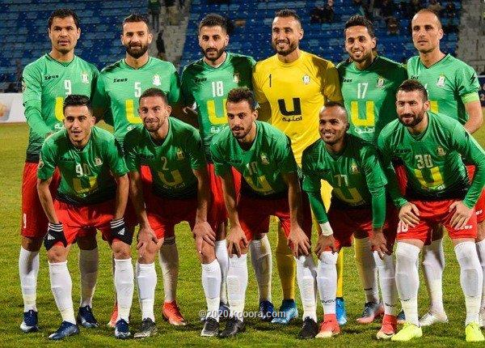

|

wehdat pic
|
Al-Wehdat Sports Club (Arabic: نادي الوحدات الرياضي) is a Jordanian sports club founded in 1956. The club is based in and represents the Amman New Camp, a Palestinian refugee camp which is also known as Al-Wehdat. Al-Wehdat's home games are played at King Abdullah II Stadium (cap. 13,265). There are other sports offered in the club, such as volleyball, and basketball
شارك فريق الوحدات في عدد من الدورات الكروية التي تم تنظيمها في أكثر من بلد شقيق. في عام 1983 كانت المشاركة الأولى في دورة عربية خارج الحدود. حيث لعب في دورة محمد علي عقيد بمدينة صفاقس التونسية، إلى جانب كل من النادي الرياضي الصفاقسي (منظم الدورة) والمغرب الفاسي وشبيبة القيروان.
وفي عام 1985 شارك الوحدات في دورة ميلاد قائد البلاد التي نظمها الفيصلي ولعب أيضا فيها الكرامة السوري والنجمة اللبناني. وفي عام 1993 لعب الوحدات في دورة الرمثا العربية الثانية، إلى جانب كل من أندية الرمثا، غزة الرياضي الفلسطيني، الوكرة القطري، الوحدة السوري، منتخب الشباب العراقي وقد أحرز الوحدات كأس هذه الدورة بأربعة انتصارات، ودون هزيمة أو تعادل. واشترك الوحدات ثلاث مرات متتالية في دورة أريحا الشتوية أعوام 1998 و1999 و2000 وأحرز لقب البطولة عامي 1998 و1999 في عام 1999 اشترك الوحدات في دورة البقاع العربية الثانية بمدينة الخيارة حيث لعب أمام ثلاثة أندية لبنانية وهي النجمة وتضامن صور والأنصار.
وفي العام ذاته 1999 اشترك الوحدات في دورة مهرجان الباسل في سوريا ولعب أمام الكرامة وتشرين وفي عام 2001 لعب الوحدات في بطولة القدس الكروية الثالثة ببغداد أمام فرق الكرامة السوري وحيفا الفلسطيني منظم البطولة والقوة الجوية العراقي وفي عام 2014 لعب الوحدات في بطولة الظفرة الكروية الثالثة في دولة الإمارات أمام فرق الرفاع البحريني والظفرة الإماراتي منظم البطولة وحل الفريق بالمركز الثاني خلف الرفاع البحريني.
|